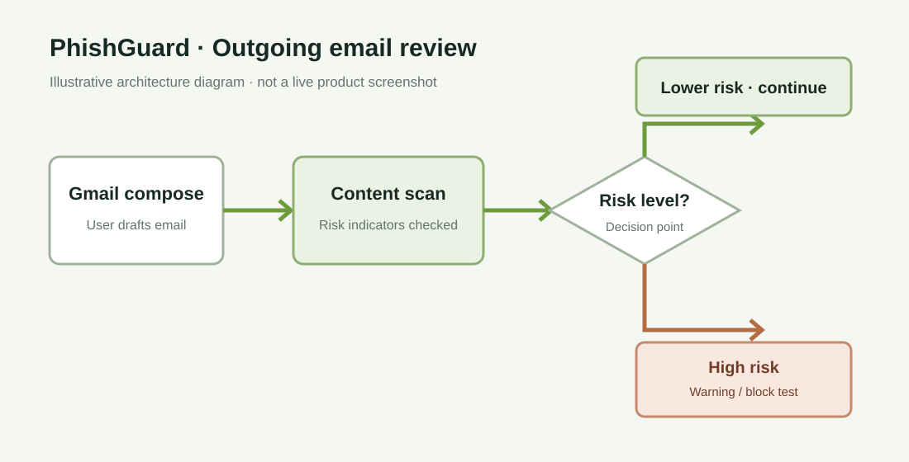
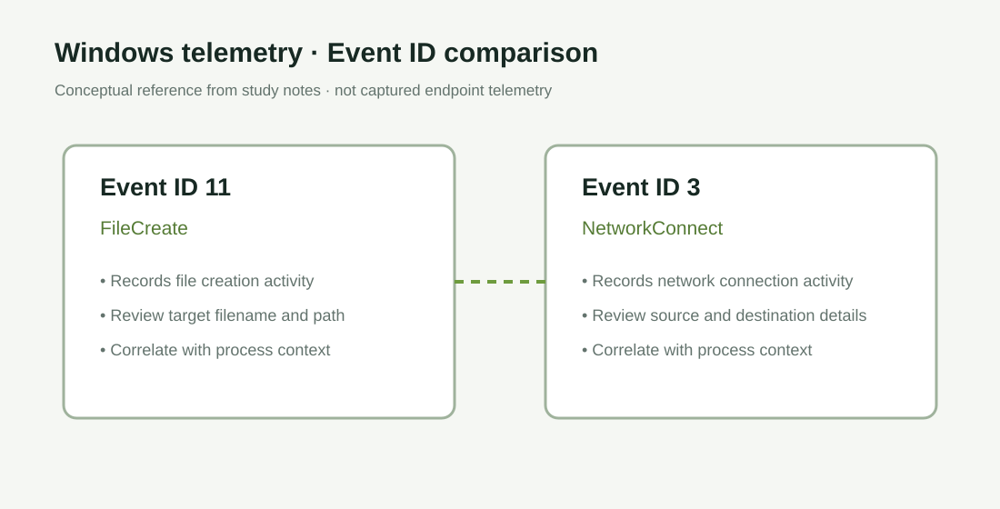
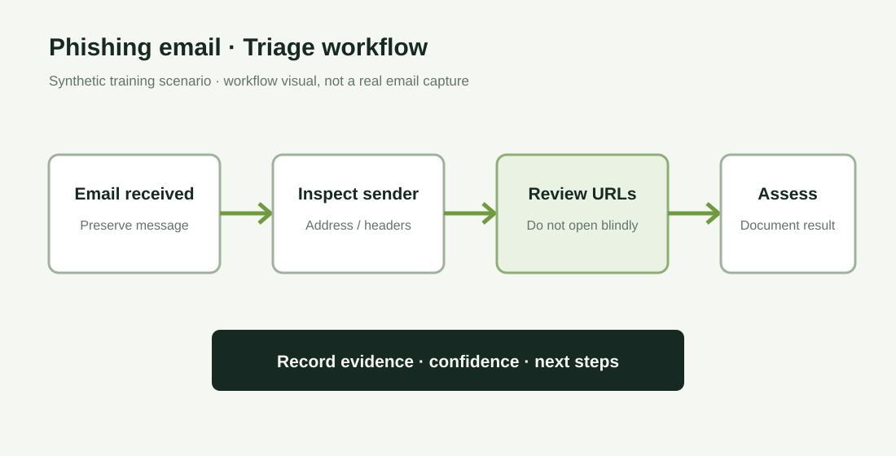

Learning by
investigating the evidence.
I'm Aryan. I am building practical blue-team skills through home labs, log analysis and incident documentation. This portfolio includes a screenshot-based Ubuntu SSH investigation, Splunk query notes and clearly labelled training exercises.
Lab investigations & notes
Each entry is labelled as a lab investigation, synthetic exercise, query reference or reusable playbook.
PhishGuard
A personal Gmail outgoing-email scanner prototype with risk warnings and a locally tested high-risk send-blocking behavior.
Read project overview ↗SSH Authentication Review
Reviewed Ubuntu auth.log screenshots in Splunk. Documented accepted and failed SSH authentication events and the limits of the available evidence.
Read lab report ↗Splunk Query Notes
Search examples and analyst notes for reviewing Windows authentication events.
Open notes ↗Windows Event Analysis
Notes on file-creation and network-connection telemetry, with example searches and investigation cautions.
View notes ↗Phishing Triage Exercise
A fictional email scenario used to practise sender, header and URL review.
View exercise ↗Suspicious File Alert Triage
A defensive workflow for collecting alert context, reviewing metadata and recording limitations.
View workflow ↗Response Playbook
A checklist for suspicious download and file-creation alerts, escalation and handoff.
Open playbook ↗Splunk screenshots
Original screenshots from the SSH authentication review. Open the report for the full timeline and analysis.


How the projects work
Visual walkthroughs based on the project notes. These are explanatory diagrams, not screenshots of live tools or production systems.




Coursework
Course completion recorded from the supplied Tutedude certificate.
Cybersecurity Course
Tutedude
Completed on 11 November 2026. Certificate ID: TD-ARYA-CS-0613.
Tools & topics
Areas I have practised or studied through labs and coursework.
Understand the event.
Show the evidence.
I am interested in SOC and blue-team work. When I document an investigation, I try to separate what the logs actually show from what still needs validation. My portfolio includes home-lab evidence as well as fictional practice scenarios, each labelled clearly.
See my GitHub profile ↗Connect with me
For cybersecurity learning, collaboration and entry-level opportunities.
LinkedIn profile ↗ GitHub profile ↗